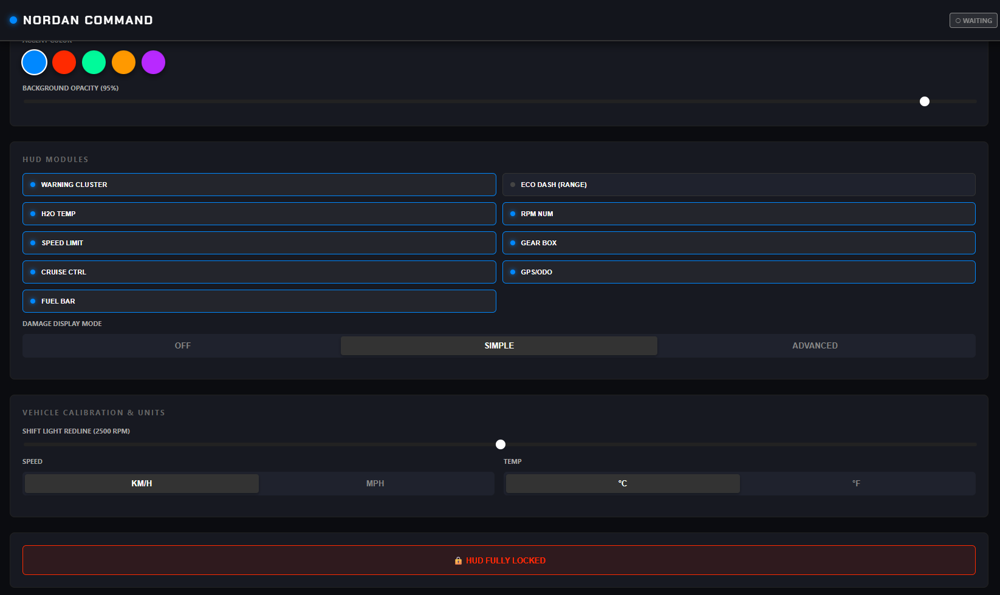
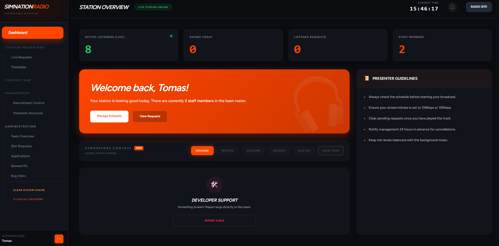

Crafting digital excellence
I build robust full-stack applications and architect experiences that are fluid, fast, and highly secure. I don't just write code; I design systems.
Engineering Stack
Frontend Ecosystem
Backend & Data
Systems & HUD
Nordan Transport Hub
An enterprise community platform architecture built for a leading VTC. Features real-time driver delivery telemetry, live operational analytics components, API integrations, and a robust structural multi-language localization framework.
- API_STREAM_ACTIVE
- SYNC: TRUCKY_HUB
Nordan VTC Telemetry
A high-performance, real-time Heads-Up Display (HUD) engineered for ETS2. Built with Rust and Tauri to intercept live physics and telemetry data with absolute zero latency.
Explore Case Study
SimNation Radio
An engineered staff dashboard for 24/7 broadcast scheduling. Features a custom JS date engine and high-density UI components integrated directly with the AzuraCast backend.
Explore Case Study
MidNightAI
Neural AIHigh-performance AI workstation engineered for speed and fortress-grade security.
> security_shield: hardened